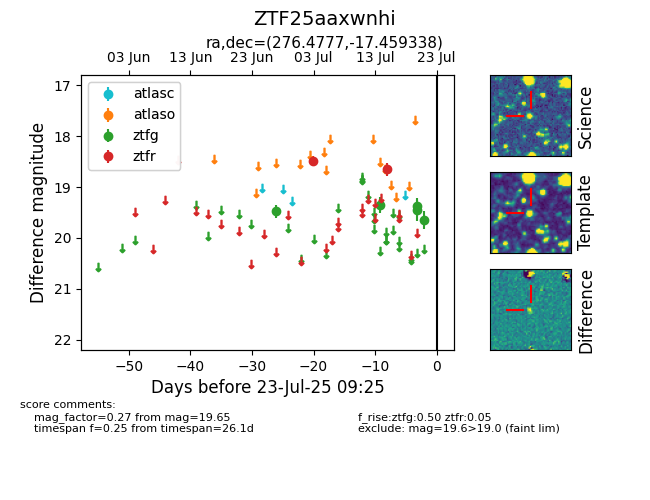

Target ZTF25aaxwnhi at 2025-07-23 11:48, see:
FINK: fink-portal.org/ZTF25aaxwnhi
Lasair: lasair-ztf.lsst.ac.uk/objects/ZTF25aaxwnhi
ALeRCE: alerce.online/object/ZTF25aaxwnhi
alt names
ZTF25aaxwnhi (ztf,fink)
coordinates:
equatorial (ra, dec) = (276.4777,-17.45934)
galactic (l, b) = (14.5316,-2.43246)
photometry
last ztfg=19.65, ztfr=18.66
5 ztfg, 2 ztfr detections
